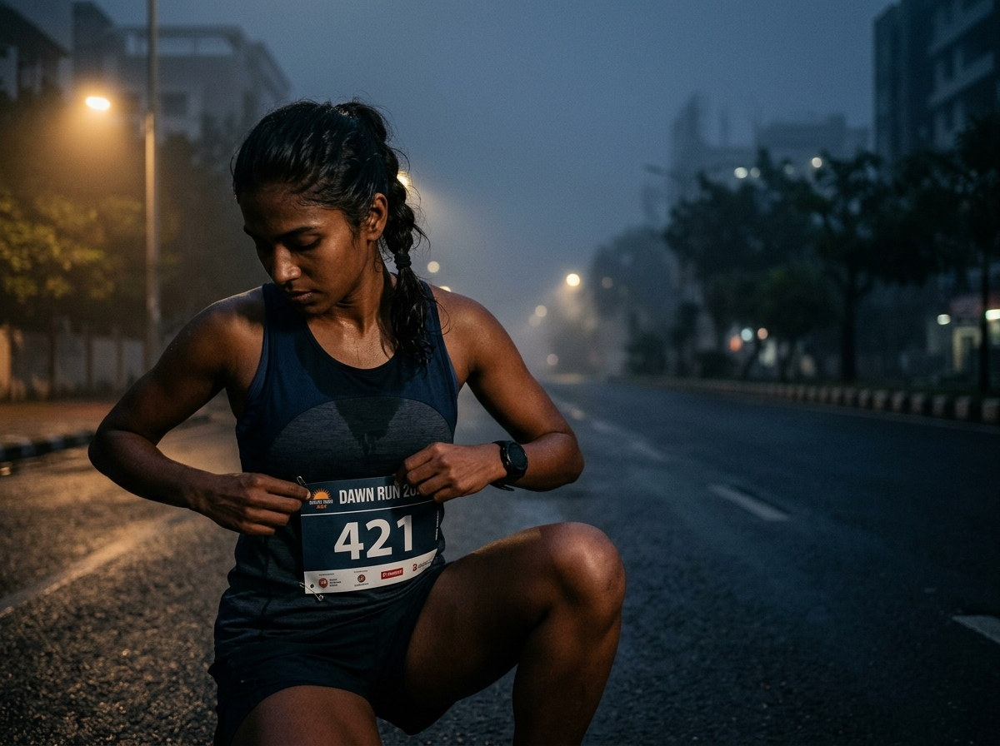
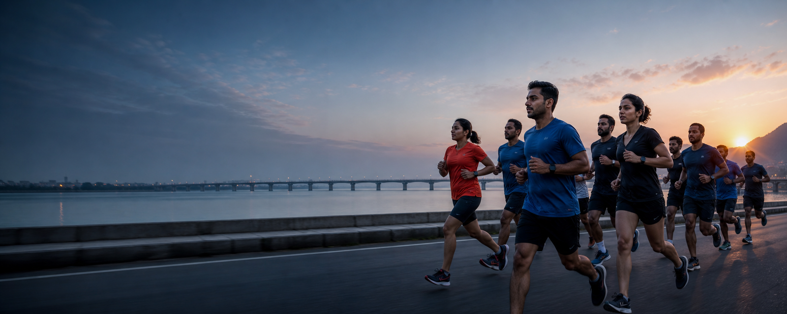
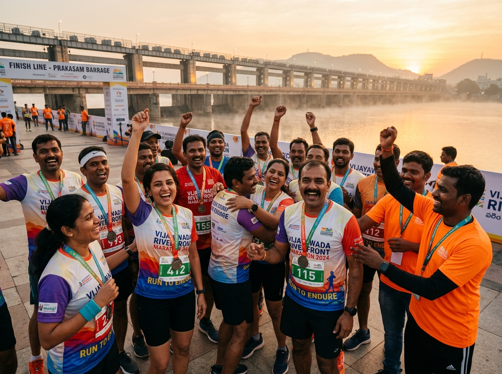
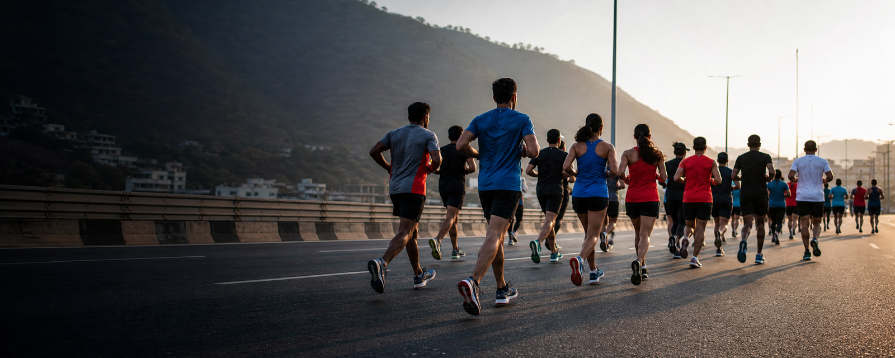
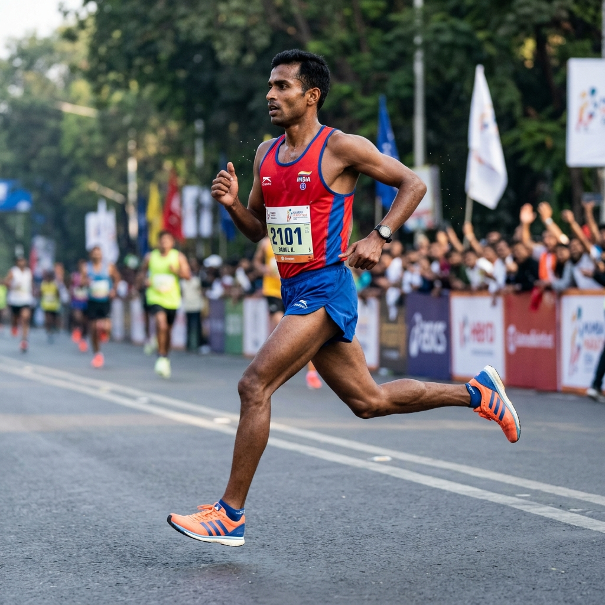

01
2017
The First Footsteps
200 pioneer runners gathered before sunrise at Benz Circle, igniting Vijayawada's first organized dawn running culture.
● 200+ Runners
A decade of movement, memories, and miles. What began as a silent morning gathering of 200 passionate runners has grown into Andhra Pradesh's most celebrated dawn athletic pilgrimage.
200 pioneer runners gathered before sunrise at Benz Circle, igniting Vijayawada's first organized dawn running culture.
First officially timed 10K race with precision RFID chip mats, creating the foundation for athletic excellence.
Inaugural 21.1K Half Marathon crossing the historic Prakasam Barrage as morning mist rose off the Krishna River.
During global lockdowns, thousands participated in our synchronized virtual run, keeping our community inspired and connected.
A triumphant return to the asphalt with over 2,500 athletes. Introduced structured Sunday training clinics across city chapters.
Inauguration of the official Pacer Bus network and advanced on-route medical grid to guide personal bests.
Pioneered eco-plogging and zero-single-use-plastic hydration stations, protecting our riverfront ecosystem.
Welcomed national-level endurance athletes from 18 Indian states, establishing Vijayawada as a premier running destination.
Expanded blade runner sponsorships, prosthetic donations via Freedom Trust, and special para-athlete divisions.
Ten years of sweat, devotion, and community. One grand highway, thousands of personal triumphs, and a sunrise you will never forget.
Three certified distances tailored for every aspiration. Whether you take your first running step or test your endurance limits over 21.1 kilometers, the city awaits your arrival.
A vibrant, celebratory 5-kilometer morning run. Perfect for beginners, families, and friends seeking the sunrise vibe along the canal promenade.
The classic endurance milestone. Test your speed and rhythm along the Krishna riverfront with certified RFID chip timing and official pacers.
The ultimate 21.1 km challenge. Cross the iconic Prakasam Barrage as dawn mist rolls off the water and conquer the twin bridges before the city awakens.
An immersive multi-stage journey through Vijayawada's historic riverfront, iconic barrage, and tree-lined arterial boulevards before sunrise.

Before the sound of the starting horn, thousands of runners stand together under a starlit charcoal sky. You hear only deep collective breaths and the soft hum of anticipation.
Hydration stations every 1.5 km stocked with natural mineral water, isotonic electrolytes, fresh citrus oranges, and cold sponges. Paced to keep you energised from start to finish.
As the golden morning sun climbs over the hills, the finish gantry appears ahead. The crowd roars, your medal is placed around your neck, and your journey enters history.
A marathon is never just the solitary struggle of legs and lungs. It is the thousands of cheering hands along Bandar Road, the volunteer handing you a cup of water, and the friend who paced your final kilometer.



Your well-being is our greatest commitment. Behind every kilometer lies a dedicated safety infrastructure ensuring medical readiness, route security, and warm human encouragement.
5 Advanced Life Support (ALS) ambulances, 12 on-course medical posts, paramedic cycling units with AEDs, and specialized physio recovery tents.
Stations every 1,500 meters stocked with mineral water, isotonic electrolytes, fresh fruit, glucose, and cold sponges for thermal regulation.
150+ trained marshals coordinating directly with Vijayawada Traffic Police for dedicated, vehicle-free running lanes and pedestrian safety.
500+ passionate volunteers managing fast bib distribution, secure baggage holding, high-energy course cheering, and finisher medal honors.
Essential details for the 10th Edition. Verified parameters are displayed below. Unannounced venues and prize structures remain strictly marked for transparency.
Snapshots of raw grit, shared laughter, and triumphant finishes captured across our decade of running along the Krishna River.


When you run over the Prakasam Barrage at 5:30 AM with the river mist on your face and the faint orange sky breaking over the hillocks, you don't feel pain. You feel Vijayawada breathing with you.
As a doctor, I talk about heart health every day. The Vijayawada Marathon is not simply a competition; it is a movement that has transformed lifestyle health for thousands of our families.
My daughter ran her very first 5K with me here. The encouragement from the volunteers and the dawn glow across the canal created an indelible bond in our family memories.
Our sincere gratitude to the dedicated corporate and community organizations powering Andhra Pradesh's landmark endurance celebration.


Everything you need to know about the 10th Edition of Vijayawada Marathon.
The marathon is scheduled for Sunday, 6 December 2026. Assembly opens at 04:30 AM, with official flag-offs starting at 05:00 AM IST. The exact starting gantry venue will be announced shortly on this portal.
Three certified categories are offered: 05 KM Fitness & Joy Run, 10 KM Timed Challenge, and 21.1 KM Half Marathon. Each category features dedicated safety, hydration, and finisher honors.
Every participant receives an official technical running singlet/tee, an RFID chip timing bib (10K & 21K), on-route hydration and nutrition, a heavy 10th Edition finisher medal, digital timing certificate, and a hot celebratory post-run breakfast.
Yes. Experienced endurance pacers will guide participants: 10K (50, 55, 60, 65, 70, 75 mins) and 21K (1:45, 2:00, 2:15, 2:30, 2:45 hrs).
Yes. A secure, barcode-monitored baggage holding facility is provided for all runners from 04:15 AM until the conclusion of the race events.
Please click on "Become A Sponsor / Partner" or email our coordination committee at info@vijayawadarunners.com. We offer Title, Healthcare, Hydration, Recovery, and Tech Partner tiers.
THE CELEBRATION • 10TH EDITION
06 DECEMBER 2026 • VIJAYAWADA
VIJAYAWADA MARATHON 2026 • 10TH EDITION
Your pre-registration has been recorded for Vijayawada Marathon 2026. Official slot confirmation and fee payment gateway will open shortly.
PARTNER WITH ANDHRA PRADESH'S LARGEST SPORTS CAMPAIGN